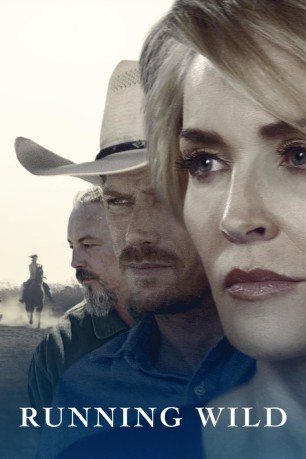
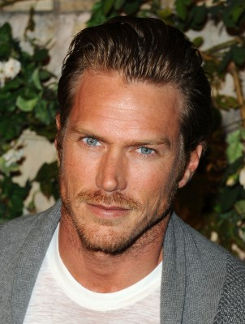
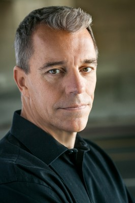
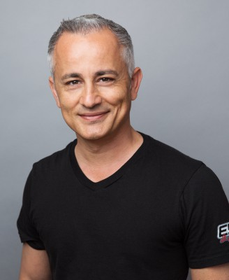
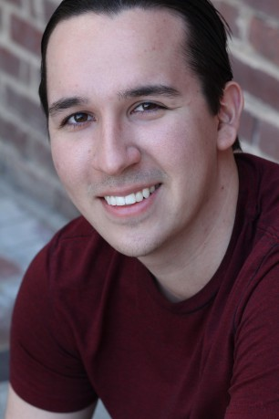
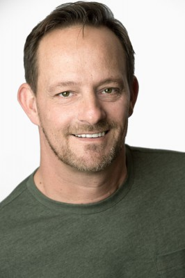

#9776 Running Wild
 
 IMDB-Wertung: 6.0 / 10
IMDB-Wertung: 6.0 / 10  Tomatometer: 30
Tomatometer: 30  Metascore: 0
Metascore: 0 
Stella Davis (Dorian Brown) ist eine Witwe, die sich ihr Leben finanziert, indem sie auf ihrer Ranch versucht, Strafgefangene wieder auf das Leben in Freiheit vorzubereiten. Dabei versucht die ungewöhnliche Truppe sich um eine Herde Wildpferde, die auf die Ranch gewandert ist, zu kümmern. Doch immer wieder werden Stella Hürden in den Weg gestellt, die sie selbst nicht versteht: Sie kämpft gegen Vorurteile, Gier und die kaltherzige Bürokratie bis sie erkennt, dass es nichts besseres gibt, als anderen zu helfen.
Jahr: 2017
Dauer: 99 Minuten
FSK: 12
Land: USA Studio: SP ReleasingTonspuren: DTS - ,
Untertitel:
Auflösung: 1080p (1920x808) Größe: 5867 MB
Genre: Drama, Western
Regisseur: Alex Ranarivelo
Drehbuch: Christina Moore, Brian Rudnick
Soundtrack: Jamie Christopherson
Darsteller:
 Sharon Stone als Meredith Parish
Sharon Stone als Meredith Parish Tommy Flanagan als Jon Kilpatrick
Tommy Flanagan als Jon Kilpatrick-  Jason Lewis als Brannon Bratt
- Christina Moore als Jennifer Hutchins
- Dorian Brown Pham als Stella Davis
 Lidia Porto als Octavia
Lidia Porto als Octavia- Tom Williamson als Debrickshaw Smithson
- John Ducey als Brent Holt
- Jessica Uberuaga als Azar
-  Michael Wiseman als Doug Ciocca
- George Kosturos als Paul
- Carol Jefferson als Maid
- Anthony Snow als JT Davis
-  Ali Afshar als Pahsa Kasra
- Diana Jackson als Luncheon Lady
- Adam Ambruso als Patrick
- Eldo Ray Estes als Meredith's Assistant
- Jake Hanson als Valet
- Seth Coltan als Larry Bussey
- Lowell Dean als Chief Colton Price
- Sandra Dee Richardson als Maid #1
-  Talon Crow als Protester
- Neil O'Neill als Cowboy
- Tim Halpin als Shill
-  Tom O'Reilly als Auctioneer Assistant
- Michael Girgenti als Matt Barker
- Hayley Gagner als Luncheon Lady
- Kristopher Graves als Firefighter
- Eric Olsson als Waiter
- Barbara Oilar als Principal Brooks
- Sky Young als Teen #1
- Brook Edward Penca als Horse Auction Bidder
- Rebecca Faiola als Luncheon Lady
- Lana Palmer als Protester
- Austin Nimnicht als Tweaker
- Carolyn Christine Gregory als Wealthy rancher
- Sarah Skotvold als Luncheon Lady
- Ben Kopperl als Doctor Forrest
- Barnaby Falls als Horseman (uncredited)
- Amy Larson als Luncheon Lady (uncredited)
- Kel Owens als The Horseman (uncredited)
- Michael Andrew Reed als Horse auction attendee (uncredited)
- John Lobato als Horse Auction Bidder
- Eloy Méndez als Carlos Gonzales
- Troy Akin als Dan
- Kyrstannie Day als Protester
- Michael Inscoe als
- Jesus N Jimenez als Ranch helper
- Douglas Gawoski als Horse Auction Bidder
- Jo Ellen Levy als Luncheon Lady
Datei: X:\HD-Western-2000-2015\Running Wild (2017, FSK12, 1920x808).mkv seit 28.10.2018
Festplatte: HD Eastern+Western
 Es gibt insgesamt 61 Filme in der Gruppe 'HD-Western-2000-2015'
Es gibt insgesamt 61 Filme in der Gruppe 'HD-Western-2000-2015'